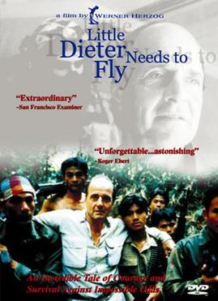

Werner Herzog
1997
80 minutes
This is a relatively straightforward documentary film about Dieter Dengler, a German-born US Navy pilot who was shot down and taken prisoner during the Vietnam War. Dieter was put into a POW camp, from which he made a daring and dramatic escape with a few of his colleagues into the jungles of Laos. He finally made it back to the United States, where he suffered from PTSD for the remainder of his days and ultimately took his own life years later, after the more interesting parts of his story had been told and retold a few times by Herzog and others.
You must admit that this is an excellent documentary, even as someone who does not usually enjoy documentaries and biopics. Dieter Dengler the man makes a fascinating subject with some interesting quirks. One of these is a bit of an obsession with doors and the ability to open them, as Herzog emphasizes, having Dieter open and re-open doors several times in a compulsive manner. Apparently, while Dengler had discussed with Herzog about how the ability to open doors made him feel free, the obsessive opening and closing of doors was a bit exaggerated for this documentary for poetic and stylistic purposes. You reflect that this is always a danger any time you let your own story be told or retold to others--even if it is retold by yourself. Even in these very pages, you question the veracity of your own memories as they are being brought to the surface by the films you are viewing. A bit of poetic license is sometimes in order.
This film makes you want to go stare at jellyfish in the National Aquarium and contemplate your own perspective on the meaning of death.
Time to choose something different: